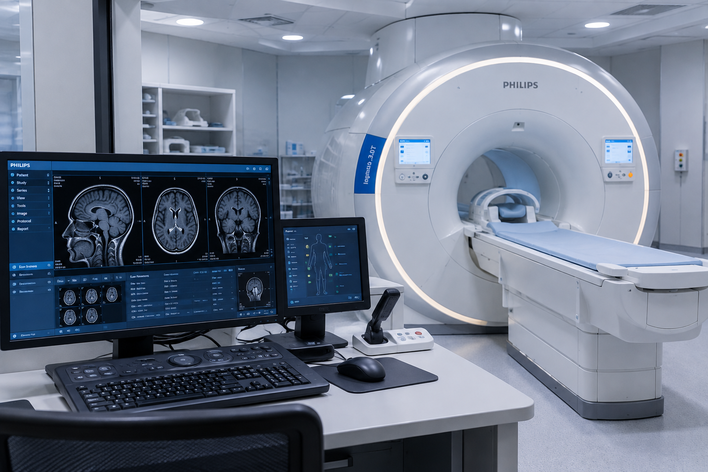

دستگاه MRI
MRI
یک روش تصویربرداری بدون درد و بدون اشعه ایکس است که با میدان مغناطیسی و امواج رادیویی تصاویر دقیقی
از اندامهای داخلی میسازد.
شخیص بسیاری از مشکلات مغز، قلب، استخوانها، مفاصل و بافتهای نرم با امآرآی انجام میشود و گاهی
برای وضوح بیشتر از ماده کنتراست استفاده میکنند.
فرادی که ضربانساز، ایمپلنت فلزی، تراشه یا گیره فلزی در بدن دارند و نیز کسانی که ترس از فضای بسته
دارند، نباید امآرآی انجام دهند.
در طول اسکن باید کاملاً بیحرکت ماند و ممکن است صداهای بلند دستگاه را با گوشی یا هدفون تحمل کرد. مدت
زمان امآرآی معمولاً ۳۰ تا ۶۰ دقیقه است.